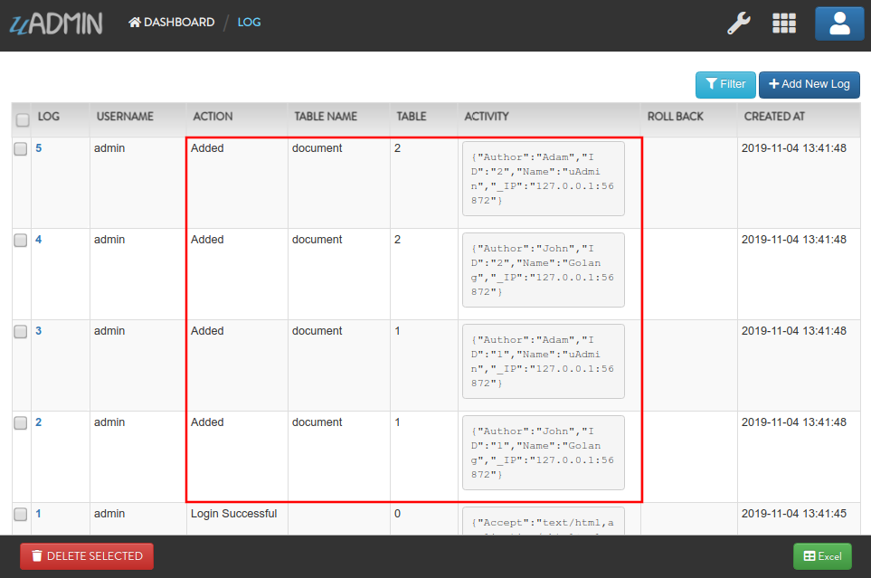
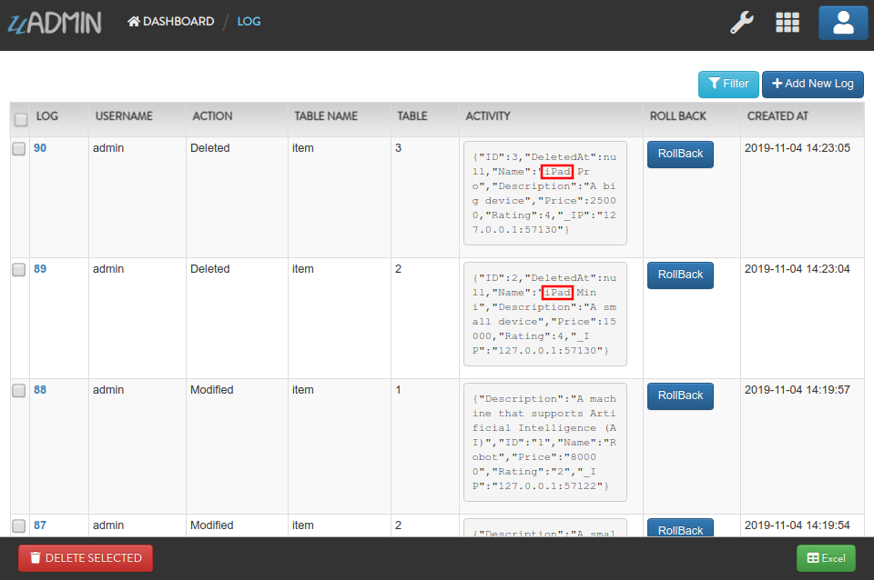

Log Functions¶
In this section, we will cover the following functions in-depth listed below:
uadmin.APILogAdd¶
APILogAdd controls the data API’s logging for add commands. By default, APILogAdd returns true.
Type:
bool
To assign a value within an application, visit API Log Add page for an example.
To assign a value in the code, follow this approach:
Prerequisites:
Go to the main.go and assign the value of the API Log Add to true.
func main(){
uadmin.APILogAdd = true
// Some codes
}
Run your application. Let’s call this URL in the address bar to add multiple records in the Document model with the following information below:
First Record
Name: Golang
Author: John
Second Record
Name: uAdmin
Author: Adam
# document is a model name
# name and author are field names
# __0 is the first index
# __1 is the second index
http://api.example.com/api/d/document/add/?_name__0=Golang&_author__0=John&_name__1=uAdmin&_author__1=Adam
Result:
{
"id": [
1,
2
],
"rows_count": 2,
"status": "ok"
}
It returns an array with a list of IDs for the newly created records.
Now go back to the uAdmin dashboard. Click on “LOGS”.

As expected, the user’s action in adding records through HTTP API was recorded in the Log model.
Exit your application. Go to the main.go and assign the value of the API Log Add to false.
func main(){
uadmin.APILogAdd = false
// Some codes
}
Run your application. Let’s call this URL to add a new record in the Document model with the following information below:
Name: Programming
Author: Admin
# document is a model name
# name and author are field names
http://api.example.com/api/d/document/add/?_name=Programming&_author=Admin
Result:
{
"id": 3,
"rows_count": 1,
"status": "ok"
}
It returns the ID of the newly created record.
Check the “LOGS” to see the result.

As expected, the user’s action in adding a record through HTTP API was not recorded in the Log model.
uadmin.APILogAdder¶
APILogAdder is an interface for models to control logging their add function in dAPI.
Type:
interface
uadmin.APILogDelete¶
APILogDelete controls the data API’s logging for delete commands. By default, APILogDelete returns true.
Type:
bool
To assign a value within an application, visit API Log Delete page for an example.
To assign a value in the code, follow this approach:
Prerequisites:
Go to the main.go and assign the value of the API Log Delete to true.
func main(){
uadmin.APILogDelete = true
// Some codes
}
Run your application. Suppose you have five records in the Item model.

Call this URL in the address bar to delete records where the name of an item contains “iPad”.
# item is a model name
# name is a field name
# __contains is an operator that will search for string values that contract
http://api.example.com/api/d/item/delete/?name__contains=iPad
Result:
{
"rows_count": 2,
"status": "ok",
}
It returns the status and the rows affected by your query.
Now go back to the uAdmin dashboard. Click on “LOGS”.
As expected, the user’s action in deleting records through HTTP API that contains “iPad” in the item name was recorded in the Log model.
Exit your application. Go to the main.go and assign the value of the API Log Delete to false.
func main(){
uadmin.APILogDelete = false
// Some codes
}
Run your application. Let’s call this URL in the address bar to delete the fourth record in the database.
# item is a model name
# 4 is an ID number
http://api.example.com/api/d/item/delete/4/
Result:
{
"rows_count": 1,
"status": "ok"
}
It returns the status and the rows affected by your query.
Check the “LOGS” to see the result.

As expected, the user’s action in deleting the fourth record through HTTP API was not recorded in the Log model.
uadmin.APILogDeleter¶
APILogDeleter is an interface for models to control logging their delete function in dAPI.
Type:
interface
uadmin.APILogEdit¶
APILogEdit controls the data API’s logging for edit commands. By default, APILogEdit returns true.
Type:
bool
To assign a value within an application, visit API Log Edit page for an example.
To assign a value in the code, follow this approach:
Prerequisites:
Go to the main.go and assign the value of the API Log Edit to true.
func main(){
uadmin.APILogEdit = true
// Some codes
}
Run your application. Suppose you have five records in the Item model where all iPad items have a rating of 4.

Call this URL to edit the rating of all iPad items to a value of 5.
# item is a model name
# name is a field name
# __contains is an operator that will search for string values that contract
# rating=4&_rating=5 means that where rating is equal to 4, change the
# rating value to 5
http://api.example.com/api/d/item/edit/?rating=4&_rating=5
Result:
{
"rows_count": 2,
"status": "ok"
}
It returns the status and the rows affected by your query.
Now go back to the uAdmin dashboard. Click on “LOGS”.
As expected, the user’s action in editing records through HTTP API was recorded in the Log model.

Exit your application. Go to the main.go and assign the value of the API Log Edit to false.
func main(){
uadmin.APILogEdit = false
// Some codes
}
Run your application. Suppose the first record in the Item model is named as “Robot”.

Call this URL to edit the name of the first record in the database from “Robot” to “Supercomputer”.
# item is a model name
# 1 is an ID number
# name is a field name
http://api.example.com/api/d/item/edit/1/?_name=Supercomputer
Result:
{
"rows_count": 1,
"status": "ok"
}
It returns the status and the rows affected by your query.
Check the “LOGS” to see the result.

As expected, the user’s action in editing the first record through HTTP API was not recorded in the Log model.
uadmin.APILogEditor¶
APILogEditor is an interface for models to control logging their edit function in dAPI.
Type:
interface
uadmin.APILogRead¶
APILogRead controls the data API’s logging for read commands. By default, APILogRead returns false.
Type:
bool
To assign a value within an application, visit API Log Read page for an example.
To assign a value in the code, follow this approach:
Prerequisites:
Go to the main.go and assign the value of the API Log Read to true.
func main(){
uadmin.APILogRead = true
// Some codes
}
Run your application. Suppose you have five records in the Item model.
Call this URL to read record(s) where rating is equal to 3.
# item is a model name
# rating is a field name
http://api.example.com/api/d/item/read/?rating=3
Result:

It returns a list of records where rating is equal to 3.
Now go back to the uAdmin dashboard. Click on “LOGS”.
As expected, the user’s action in reading records through HTTP API was recorded in the Log model.

Exit your application. Go to the main.go and assign the value of the API Log Read to false.
func main(){
uadmin.APILogRead = false
// Some codes
}
Run your application. Call this URL to read the second record in the Item model.
# item is a model name
# 2 is an ID number
http://api.example.com/api/d/item/read/2/
Result:

It returns a JSON object representing an item where ID=2.
Check the “LOGS” to see the result.

As expected, the user’s action in reading the second record through HTTP API was not recorded in the Log model.
uadmin.APILogReader¶
APILogReader is an interface for models to control logging their read function in dAPI.
Type:
interface
uadmin.APILogSchema¶
APILogSchema controls the data API’s logging for schema commands. By default, APILogSchema returns true.
Type:
bool
To assign a value within an application, visit API Log Schema page for an example.
To assign a value in the code, follow this approach:
Prerequisite:
Go to the main.go and assign the value of the API Log Schema to true.
func main(){
uadmin.APILogSchema = true
// Some codes
}
Run your application. Suppose you have five records in the Item model.
Call this URL to read the full schema of the Item model.
# item is a model name
http://api.example.com/api/d/item/schema/
Result:

It returns a JSON object representing uAdmin’s ModelSchema of the Item model.
Now go back to the uAdmin dashboard. Click on “LOGS”.
As expected, the user’s action in getting the schema of the Item model through HTTP API was recorded in the Log model.

Exit your application. Go to the main.go and assign the value of the API Log Schema to false.
func main(){
uadmin.APILogSchema = false
// Some codes
}
Run your application. Recall this URL to read the full schema of the Item model.
# item is a model name
http://api.example.com/api/d/item/schema/
Check the “LOGS” to see the result.

As expected, the user’s action in getting the schema of the Item model through HTTP API was not recorded in the Log model.
uadmin.APILogSchemer¶
APILogSchemer is an interface for models to control logging their schema function in dAPI.
Type:
interface